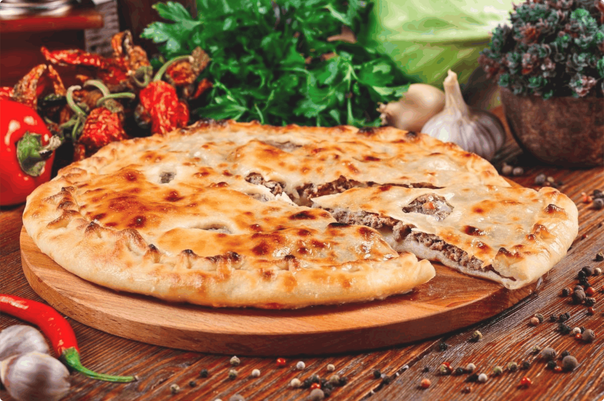
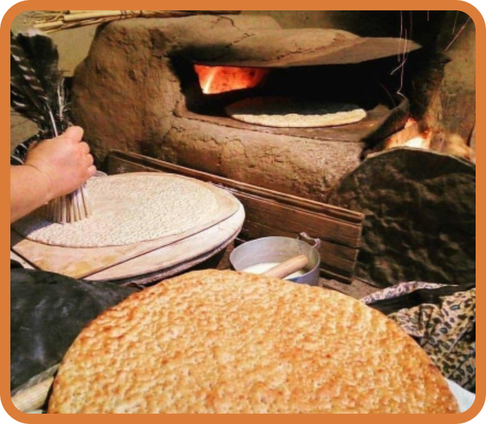

На первый взгляд, дагестанская кухня может показаться скучной и однообразной.
Основные продукты — максимально простые и дешёвые: тесто, фарш, сыр...
Но сколько придумано вкуснейших блюд на их основе!
Ведь в одном регионе вместе живут свыше сорока разных национальностей, и у каждой — свои кулинарные традиции.
Чуду
— блюдо народов Дагестана, входит в Лезгинскую, Даргинскую и другие национальные кухни. Представляют собой тонкие, либо толстые пресные лепёшки с начинкой, обжаренные на большой сухой сковороде. По форме ЧУДУ бывают как круглые, так и полукруглые. Тесто может быть как пресное или дрожжевое, так и замешанное на кисломолочном продукте. Вариантов начинки существует множество — это и мясо (баранина, говядина), и зелень (укроп, дикий лук, крапива) ну и творог. Готовые чуду обычно смазывают маслом и складывают друг на друга, образуя стопку. Потом накрывают чем-нибудь, чтобы ЧУДУ отпарились и смягчились. Употреблять только горячим, потому что так вкуснее.
Хинкал
— Традиционное блюдо Кавказкой кухни, одно из наиболее популярных и в наши дни. Представляет собой вареные в мясном бульоне кусочки теста “ХИНКАЛИНЫ”, подаваемые с бульоном, варёным мясом (курица, говядина, баранина) и соусом (чесночный, томатный и др.) Каждая национальность готовит свой ХИНКАЛ:

Урбеч
— это кавказская “Нутелла”. Попробовав его, вам точно захочется увезти с собой пару банок.
В качестве основы используют все виды орехов: кунжут, фисташки, семена подсолнечника, тыквенные семечки.
Мак, кешью, ядра абрикосовых косточек, грецкий и лесной орехи. Миндаль, арахис, конопляные семечки...
А в классической версии — семена льна.
Дагестанцы обожают добавлять УРБЕЧ везде, и не боятся необычных сочетаний — к примеру, часто подают его к тыквенному чуду.
Более того, урбеч используют даже в виде лекарства от боли в горле.

Лезгинские Лаваши
— это тонкий хлеб из слоеного теста, который делается в печи по традиционному лезгинскому рецепту. Добавляют в рецепт немного ореховой травы, которая придает вкусный аромат и без того вкусному хлебу. Лаваши бывают разные: Хлеб (Хран ФУ), Лепёшка слоённая (Тунут), тонкий лаваш (Чар фу) ну и т.д.
